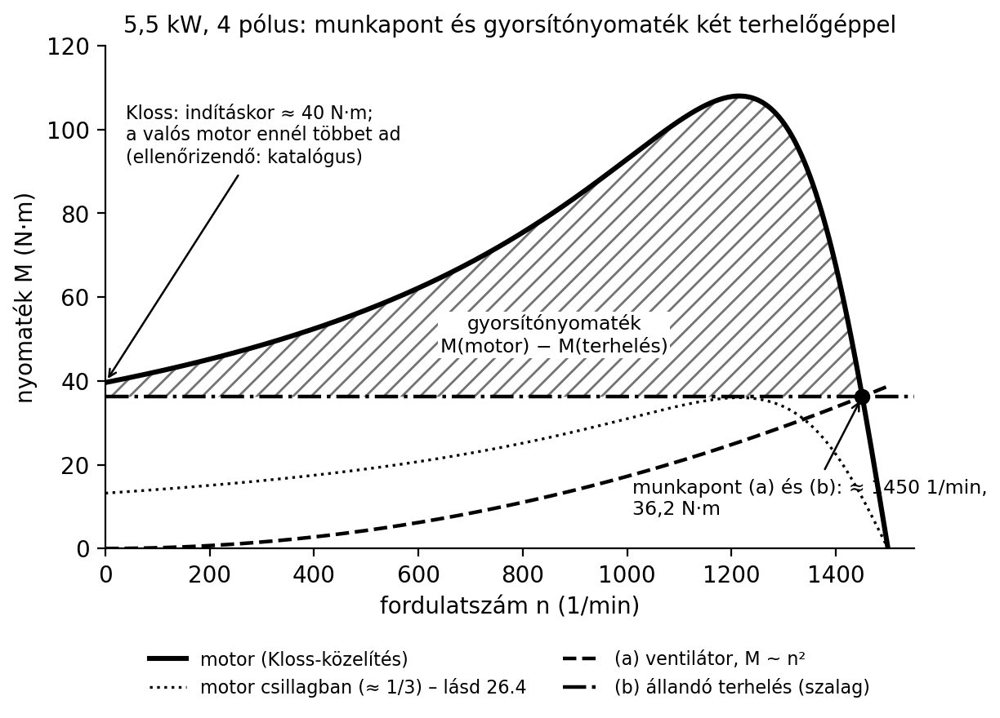

A műhelyben egy régi motor adattáblája akár lekopott, akár poros, de ha érted, mit jelent a rajta lévő 1450 1/min, a cosφ 0,81 vagy a Δ/Y 230/400 V jelölés, azonnal tudni fogod, hogy a motor megfelel-e a hajtásnak, csillag–delta indítást tudsz-e választani, és miért nem szabad a névleges nyomaték többszörösét tartósan kérni tőle. Az adattábla nem „papír”, hanem a gép villamos és mechanikai személyazonossága: a hibakeresés és a kiválasztás is innen indul. Ebben az alfejezetben a legfontosabb „híd” mennyiséget, a szlipet, és a hozzá kapcsolódó nyomaték–fordulatszám jelleggörbét tanulod meg úgy, hogy számolni és a gyakorlatban ellenőrizni is tudd.
Definíció. A szlip (csúszás) azt adja meg, hogy a forgó mágneses mező fordulatszámához képest a forgórész mennyivel marad le, viszonyítva a szinkron fordulatszámhoz:
ahol
a szlip (nincs mértékegysége, gyakran %-ban adják meg),
a szinkron fordulatszám (1/min),
a tényleges fordulatszám (1/min).
A szinkron fordulatszámot már a Szerkezet és működési elv, forgó mágneses mező alfejezetből ismered:
ahol a hálózati frekvencia (Magyarországon 50 Hz), pedig a póluspárszám. Figyelj: ha egy motort „4 pólusúnak” neveznek, akkor a pólusszám 4, a póluspárszám 2, tehát ; a .
Szabály. A szlip értéke névleges terhelésnél kis motoroknál jellemzően 3–8 % közötti, nagyobb gépeknél 1–3 % is lehet. Pontos értéke a motor tervezésétől függ, és mindig a gyártói adattábla szerint veendő figyelembe (ellenőrizendő: konkrét motor adattáblája).
A forgó mágneses mező és a forgórész közötti relatív fordulatszám . Mivel a rotorban indukált feszültség frekvenciája arányos ezzel a relatív mozgással, a rotoráram frekvenciája:
Például ha és , akkor . Ez azt jelenti, hogy a rotoráram frekvenciája névleges terhelésnél csak néhány hertz, tehát lassan változik; ezért nem kell a rotorkörben nagyfrekvenciás jelenségektől tartani. (Az aszinkron gépet azért nevezik indukciós gépnek, mert a forgórész áramát a forgó mező indukálja, a forgórész nem kap külső táplálást.)
Összefüggés. A motor tengelyén leadott teljesítmény és a nyomaték kapcsolata:
ahol a mechanikai teljesítmény (W), a nyomaték (N·m), a szögsebesség (rad/s). Ha a fordulatszámot -ben (1/min) és a teljesítményt kW-ban adjuk meg, a gyakorlatban használt alak:
ahol kW-ban, 1/min-ben, N·m-ben adódik. A 9550-es szorzó a mértékegység-átváltásból származik: , egyszerűsítve 9550.
Számítás. Mennyi a névleges nyomatéka az 5,5 kW-os, 1450 1/min-es motornak?
Adott: , . Keresett: .
Ellenőrzésképp: a teljesítmény , ahol . , tehát a számítás helyes.
Az aszinkron motor nyomatéka nem állandó: erősen függ a fordulatszámtól, azaz a szliptől. A gyártói katalógusokban gyakran ábrázolják a nyomaték–fordulatszám jelleggörbét ( görbét). A görbe alakját a következő egyszerűsített, ún. Kloss-féle összefüggés jól leírja:
ahol a billenőnyomaték (a maximális nyomaték), pedig a billenőszlip (az a szlip, amelynél a billenőnyomaték fellép). Ez az összefüggés a névleges tartományban és a billenőpont környékén jól közelíti a görbét, de nagy szlipeknél (az indítás közelében) és a féküzemben már csak durva közelítésnek tekintendő: a kalickás forgórész indításkor megnövekvő ellenállását nem veszi figyelembe, ezért a valós indítónyomatéknál általában kisebbet ad.
A görbe fontos pontjai:
Üzemtartományok a fordulatszám szerint:
Összefüggés. A hálózati feszültség csökkenése nagyon erősen hat a nyomatékra: a billenőnyomaték közelítőleg a feszültség négyzetével arányos:
Ha például a kapocsokon a 400 V helyett csak 360 V jelenik meg (10 % esés), a billenőnyomaték kb. -szeresére, tehát 19 %-kal csökken. Ezért az alulfeszültség miatt a motor könnyen lefulladhat, miközben az áramfelvétele megnő.
Az alábbi ábra az 5,5 kW-os, 4 pólusú motor szemléltető nyomaték–fordulatszám görbéjét két terhelőgéppel együtt mutatja: (a) ventilátorral, amelynek nyomatéka a fordulatszám négyzetével nő ( N·m), és (b) állandó nyomatékú szállítószalaggal ( N·m).

Az állandósult munkapont ott van, ahol a motor és a terhelőgép görbéje metszi egymást: itt a két nyomaték egyenlő, a fordulatszám nem változik (mindkét terhelésnél kb. 1450 1/min). A két görbe közötti különbség a gyorsítónyomaték (, satírozva): amíg pozitív, a gép gyorsul, és minél kisebb, annál tovább tart az indítás. A pontozott görbe előre mutat a csillag–delta indításra: csillagban a nyomaték kb. harmadára csökken, így a teli szalag (b) állandó 36,2 N·m-es terhelését már az indításnál sem győzi le (≈ 13 N·m), a ventilátor (a) viszont kis fordulatszámon alig terhel, ezért csillagban is felpörög (a pontozott és a szaggatott görbe metszéséig, kb. 1340 1/min-ig), és csak ezután kell deltába kapcsolni.
A görbe a Kloss-képletből számolt: N·m, (a billenőpont 1/min-nél van), és ezekkel a paraméterekkel a 36,2 N·m-es névleges terheléshez éppen kb. 1450 1/min tartozik. A billenőnyomaték tehát közel háromszorosa a névlegesnek. A névleges munkapont a szinkron fordulatszám közelében, a görbe meredek, stabil szakaszán van. Az indítónyomatékra () a képlet csak kb. 40 N·m-t () ad; a valós kalickás motor indítónyomatéka a katalógusok szerint ennél nagyobb: kis és közepes motoroknál gyakran – (a fenti –-szeres tartomány felső része; ellenőrizendő: gyártói adatlap), mert a Kloss-képlet az indítás közelében csak közelítő.
A HTML-kiadásban az alábbi ábra interaktív: a billenőnyomaték, a billenőszlip és a terhelő nyomaték csúszkával állítható, a görbe és az üzemi pont azonnal frissül.
A statikus tartalék ábrán ugyanaz a görbe látható, mint a fenti charton ( N·m, ): feltüntetve a Kloss-képletből adódó indítónyomatékot (≈ 40 N·m), a billenőpontot (1215 1/min), a 36,2 N·m-es üzemi pontot (≈ 1450 1/min), valamint összehasonlításul egy élesebb () és egy 10 %-kal kisebb feszültséghez tartozó görbét. Az interaktív változatban próbáld ki: ha a billenőszlipet 0,05-re csökkented, a görbe élesebbé válik, a billenőnyomaték közelebb kerül a szinkron fordulatszámhoz.
A motor az adattáblázott névleges tengelyteljesítményt () nem 100 % hatásfokkal állítja elő. A hálózatból felvett hatásos villamos teljesítmény háromfázisú, szimmetrikus hálózat esetén:
ahol a vonali feszültség (400 V), a vonali áram, a teljesítménytényező. A hatásfok:
A felvett teljesítmény egy része rézveszteségre (állórész és forgórész ellenállása), vasveszteségre és súrlódásra megy el, ezért a hatásfok mindig kisebb 1-nél. Az aszinkron motor hatásfoka névleges terhelésnél jellemzően 80–95 %, a teljesítménytényező pedig gyakran 0,75–0,90 közötti.
Számítás. Mennyi az 5,5 kW-os, 400 V-os, 11,5 A-es, cosφ = 0,81-es motor felvett teljesítménye és hatásfoka?
Adott: , , , . Keresett: és .
Ellenőrzés: a felvett és leadott teljesítmény különbsége veszteség, ami a felvett teljesítmény 14,7 %-a, és ez összhangban van a kb. 85 %-os hatásfokkal.
A motor ritkán jár pontosan névleges terhelésen. A tendencia (a konkrét számokat a gyártó részterhelési adataiból vedd; ellenőrizendő):
| Terhelés | Áram | Teljesítménytényező | Hatásfok |
|---|---|---|---|
| üresjárás | jellemzően a névleges 30–50 %-a, főleg mágnesező áram (ellenőrizendő) | nagyon kicsi | nulla (nincs leadott teljesítmény) |
| kb. 25 % | alig kisebb részarányban csökken, mint a terhelés | alacsony | érezhetően romlik |
| kb. 50–75 % | a névleges alatt | javul a terheléssel | a névlegeshez közeli |
| 100 % |
A túlméretezett motor ezért rossz teljesítménytényezővel és gyengébb hatásfokkal dolgozik. Fontos: a kis terhelés nem jelent arányosan kis áramot, az áramból tehát kis terhelésnél nem becsülheted jól a terhelést.
Szabály. A névleges szlip környékén, a jelleggörbe közel egyenes szakaszán a nyomaték a szlippel arányos: (azonos feszültségen).
A helyszíni mérés lépései (jogosult személy, tanulónak oktató felügyeletével; a gépet a mérőpontok előkészítésekor az öt biztonsági lépéssel válaszd le):
1. gyakorló feladat (C). , a mért fordulatszám 1475 1/min. Mekkora a terhelés?
Megoldás. , , a terhelés .
Definíció. Az adattábla a villamos gépen elhelyezett, a gyártó által megadott tábla, amely a gép azonosításához és biztonságos üzemeltetéséhez szükséges névleges adatokat és jelöléseket tartalmazza.
Szabvány. A villamos gépek adattáblájára és üzemmódjaira vonatkozó általános követelményeket az MSZ EN 60034-1 (villamos gépek – 1. rész: névleges adatok és üzemmódok) szabályozza. A védettségi fokozat az MSZ EN 60529 (IP-kód), a szigetelési osztály az IEC 60085/MSZ EN 60034-1 köre szerint értendő. A konkrét értékeket mindig a gyártói adattábla és kezelési utasítás rögzíti (ellenőrizendő: aktuális szabványkiadás és gyártói dokumentáció).
A leggyakoribb adattábla-mezők:
Cseréhez és az indítás tervezéséhez az adattáblán túl a gyártói katalógus is kell (a példaértékek szemléltetők):
| Mező (példa) | Mire kell? |
|---|---|
| (indítási/névleges áram) | indítási áram, feszültségesés indításkor, védelem beállítása (indítás) |
| (indítási/névleges nyomaték) | elindul-e a terhelés, elég-e csillag–delta indításnál (kb. a harmada) |
| (billenő/névleges nyomaték) | túlterhelési tartalék, viselkedés feszültségeséskor |
| feszültségtartomány (380–420 V Δ) | illeszkedik-e a hálózathoz; az áram a tartományon belül is változik |
| építési alak: IM B3 (talpas), IM B5 (karimás), IM B14 (kis karimás), IM B35 (talpas és karimás) | illeszkedik-e a hajtott géphez |
| méretnagyság (tengelymagasság, pl. 132) | tengelyátmérő, retesz, rögzítőfuratok |
| hűtési mód: IC 411 (saját ventilátor) | frekvenciaváltós, kis fordulatú üzemben hűtési gond (fordulatszám-változtatás) |
| környezeti hőmérséklet (rendszerint 40 °C) és tengerszint feletti magasság (rendszerint 1000 m-ig) | melegebb vagy magasabb helyen csökkenteni kell a terhelést |
(Ellenőrizendő: MSZ EN 60034-7 az IM-, MSZ EN 60034-6 az IC-jelölésekhez, MSZ EN 60034-1 a környezeti feltételekhez; a gyártói katalógus.)
Motorcsere-ellenőrzőlista – a régi és az új motor egyezzen, illetve feleljen meg:
Az áram mindig a mellette álló feszültséghez és kapcsoláshoz tartozik: 690 V-on, csillagban ugyanaz a teljesítmény áramot jelent. A motorvédő beállításánál tehát annak a sornak az áramát kell venni, amelyik a tényleges hálózati feszültséghez és kapcsoláshoz tartozik. A HTML-kiadásban a mezők és a magyarázatok rámutatásra összetartozóan kiemelődnek.
Továbbvitt eredmény. Az adattáblán szereplő kapcsolási feszültség (Δ/Y) és a névleges fordulatszám, áram, cosφ értékek nélkülözhetetlenek a Kapocsdoboz, csillag–delta bekötés és forgásirány alfejezetben, ahol a tényleges bekötést tanulod meg, valamint a Diagnosztika: szemrevételezés, mérések, hibajegyzőkönyv alfejezet hibakeresési lépéseihez, mert a mért fordulatszámból számolt szlip és a névleges adatok összevetése utal a túlterhelésre, alulfeszültségre vagy mechanikai hibára.
Egy ipari darabológép hajtását 5,5 kW-os motorral cserélték. A szerelő bekötötte, de a motor néhány perc után rendszeresen leoldott. A feszültség mérésénél kiderült, hogy a csatlakozási ponton a névleges 400 V helyett 352 V volt (12 %-os feszültségesés a hosszú tápkábel miatt). A motor billenőnyomatéka -szeresére esett, és a gép nyomatékigénye meghaladta a csökkent billenőnyomatékot, ezért a motor „lefulladt”, miközben az áram a névleges többszörösére nőtt. A megoldás a vezeték keresztmetszetének növelése volt. A tanulság: a jelleggörbe és az adattábla csak névleges feszültség mellett érvényes.
Gyakorlás: ennek az alfejezetnek a kidolgozott példái, gyakorlatai és megoldással ellátott feladatai az Összefoglaló feladatgyűjtemény villanyszerelő tanulóknak című kötet 26.2 szakaszában találhatók.
Az aszinkron motor a forgó mágneses mező fordulatszámánál kisebb fordulatszámmal forog. A szlip azt fejezi ki, mekkora ez a lemaradás. A szinkron fordulatszám ; a rotoráram frekvenciája . A nyomaték a teljesítményből és a fordulatszámból számítható: (P kW-ban, n 1/min-ben, M N·m-ben). A nyomaték–fordulatszám jelleggörbén megkülönböztetjük az indítónyomatékot, billenőnyomatékot és a névleges üzemi pontot. A billenőnyomaték a feszültség négyzetével arányos, ezért az alulfeszültség kritikus. A görbe három tartománya: motorüzem (), generátorüzem () és féküzem (). A motor adattáblája tartalmazza a névleges teljesítményt, feszültséget, áramot, fordulatszámot, cosφ-t, üzemmódot (pl. S1), IP-védettséget és szigetelési osztályt. Ezeket az adatokat a Kapocsdoboz, csillag–delta bekötés és forgásirány és a Diagnosztika: szemrevételezés, mérések, hibajegyzőkönyv alfejezetek használják tovább. Az adattábla mindig a gyártó hivatalos dokumentuma, ezért névleges adatként elsődleges forrás.